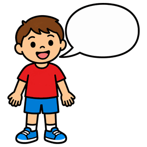

Materiales ColmenIA
Materiales abiertos para familias, maestros y logopedas. Los hacemos entre todos, en la colmena.
 Juego · Audición
Un oído campeón
Entiende la audiometría y aprende trucos para vivir con un solo oído que oye bien. Cinco niveles con estrellas.
Juego · Audición
Un oído campeón
Entiende la audiometría y aprende trucos para vivir con un solo oído que oye bien. Cinco niveles con estrellas.

Próximamente Lo que pide la colmena Cada material nuevo sale de lo que nos pedís. Cuéntanos qué necesitas.Entra en la comunidad ColmenIA
Gabinete Fönia · ColmenIA. Estos materiales son informativos y no sustituyen la consulta con un profesional.